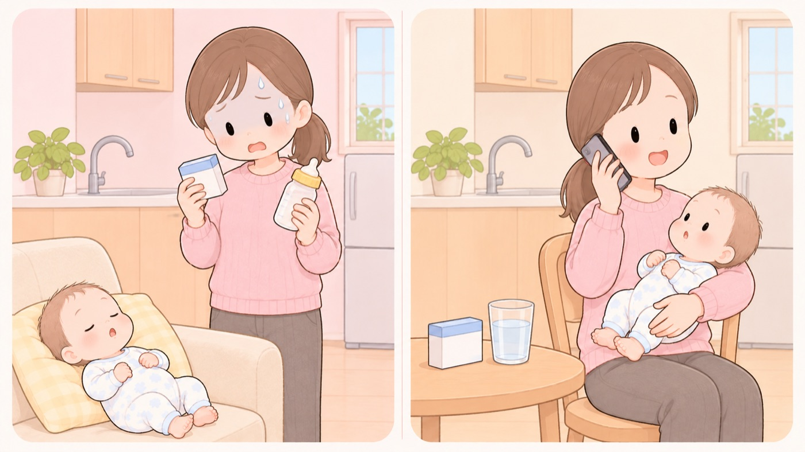

薬を飲むために、母乳をやめるべきか
授乳に適さないとされる薬は4つだけ。説明書の「授乳を中止」だけで決めない
産後に熱を出したり、歯が痛くなったり、前から飲んでいる薬を続ける必要が出てきます。そのときに、薬をやめるか母乳をやめるかの二択で考えてしまいがちです。
国立成育医療研究センターの妊娠と薬情報センターは、多くの薬は母乳に移る量が非常に少なく、赤ちゃんに影響する可能性は低いとしています。薬を飲んでいても母乳をあきらめなくてよく、母乳のために薬をやめる必要もない、と書いています。
このページで扱うのは、どう調べて、どこに相談するかまでです。個別の薬を飲んでよいかどうかは、ここでは判断しません。

授乳中の使用に適さないとされているのは、この4つだけ
| アミオダロン | 不整脈の薬です。代表的な商品名はアンカロンです。 |
|---|---|
| コカイン | 麻薬です。 |
| ヨウ化ナトリウム（123I） | 甲状腺の病気を調べるための放射性の薬です。甲状腺シンチグラフィによる診断と、甲状腺摂取率による機能の検査に使います。代表的な商品名はヨードカプセル-123です。 |
| ヨウ化ナトリウム（131I） | 甲状腺の治療に使う放射性の薬です。甲状腺機能亢進症の治療、甲状腺がんとその転移巣の治療などに使います。代表的な商品名はヨウ化ナトリウムカプセルです。 |
- すること：やめる前に、授乳を続けたいと主治医か薬剤師に伝える
同センターは、個々の薬についての正しい情報をもとに、主治医と相談しながら決めることが大切だとしています。自分で結論を出す前に、続けたいという希望を先に伝えます。
- すること：説明書に「授乳を中止」と書かれていても、それだけで決めない
同センターは、添付文書の授乳に関する記載について、科学的な裏付けが十分ではない場合があることが分かっているとしています。2019年からは記載が変わり、多くの薬では「治療上の有益性及び母乳栄養の有益性を考慮し、授乳の継続又は中止を検討すること」となりました。
- すること：薬局で買う薬は、商品名ではなく成分名で調べる
同センターの一覧は成分名で引く形になっていて、市販薬の場合は主な成分で確認するよう案内されています。箱の裏の成分表示を見てから調べます。商品名で見つからなくても、載っていないとはかぎりません。
- すること：それでも決まらないなら、相談の窓口がある
同センターは、出産後の人を対象に、授乳中の薬の相談を受けています。電話かオンラインで20分、料金は2,200円（税込）、火曜・木曜・金曜の午後で、前日の昼までに申し込みます。
ここで行われるのは助言であって、診断ではありません。母子健康手帳とお薬手帳を手元に用意して申し込みます。
- すること：母親の体調を、母乳と同じ重さで考える
同センターは、我慢して薬を飲まないと母親の病気が悪くなって育児自体が難しくなるかもしれない、と書いています。薬のことだけを考えて決める問題ではありません。
- しないこと：一時的にやめればあとで戻せる、と考えて自分で止めない
同センターは、一時的な中止であっても、再開後に母乳の分泌量が落ちて、母乳育児を続けるのが難しくなる場合があると注意しています。
- しないこと：一覧を見ただけで、自分で結論を出さない
同センターは、上の表についてこの表に記載されていない薬が、すべて安全な薬ではありませんと書き添えています。4つに入っていないことは、飲んでよい理由にはなりません。表は、相談するときの材料です。
月齢が進むと、影響はさらに小さくなる
同センターは、離乳食が進んだり、ミルクとの混合になって赤ちゃんが母乳を飲む量が減ると、薬の影響はより少なくなると書いています。
そもそも母乳はお母さんの血液から作られるため、飲んだ薬は母乳中にも出ます。ただし母乳に含まれる量はとても少なく、その母乳を飲んでも、赤ちゃんの血液に届くまでに量はさらに少なくなります。だから影響が出る可能性はとても低い、という説明です。
この項目の根拠
- 授乳と薬について知りたい方へ（国立成育医療研究センター 妊娠と薬情報センター）（新しいタブで開きます）
多くのお薬は母乳中に移行するがその移行する量は非常に少ないことがわかっており、赤ちゃんに影響する可能性は低いこと。お薬を飲んでいるお母さんは母乳をあげることを必ずしもあきらめなくてはいけないわけではなく、母乳をあげるために必ずしもお薬をやめる必要もないこと。個々のお薬についての正しい情報をもとに主治医と相談しながら決めていくことが大切であること。母乳はお母さんの血液から作られ、飲んだお薬は母乳中に分泌されるが多くのお薬では母乳中に含まれるのはとても少ない量であり、さらに赤ちゃんの血液に届くまでに量はどんどん少なくなるため赤ちゃん自身に影響が出る可能性はとても低いこと。月齢が大きくなって離乳食がすすんだりミルクとの混合栄養などで母乳を飲む量が減るとお薬の影響はより少ないと考えられること。添付文書の授乳中の使用に関する項目に「授乳を中止」と記載されていても科学的な裏付けが十分ではない場合があることがわかっており、2019年から記載が変更されて多くの薬剤では「治療上の有益性及び母乳栄養の有益性を考慮し、授乳の継続又は中止を検討すること。」と記載されていること。一時的な中止であっても再開後に母乳分泌量の低下がみられ母乳哺育の継続が難しくなる場合もあるため注意が必要であること。我慢をしてお薬を飲まないとお母さんの病気が悪くなって育児自体が難しくなるかもしれないこと。授乳中にお薬の服用が必要な人を対象に、出産後の人向けの電話またはオンラインでの相談を事前予約制で受けていること。 - 授乳中の使用には適さないと考えられる薬（国立成育医療研究センター 妊娠と薬情報センター）（新しいタブで開きます）
「授乳中の使用に適さないと考えられる薬」は、病気と薬の児への影響を考えて明らかに授乳期の治療に適さないと判断される薬であること。この表に記載されていない薬が、すべて安全な薬ではないこと。表に挙げられているのはアミオダロン（抗不整脈薬）、コカイン（麻薬）、ヨウ化ナトリウム123I・131I（放射性ヨウ素）の4成分であること。 - ヨードカプセル-123 添付文書（医薬品医療機器総合機構 医療用医薬品情報検索）（新しいタブで開きます）
ヨードカプセル-123（ヨウ化ナトリウム123I）の効能又は効果が、甲状腺シンチグラフィによる甲状腺疾患の診断と、甲状腺摂取率による甲状腺機能の検査であること。授乳婦について、診断上の有益性及び母乳栄養の有益性を考慮し、授乳の継続又は中止を検討することとされていること。 - ヨウ化ナトリウムカプセル 添付文書（医薬品医療機器総合機構 医療用医薬品情報検索）（新しいタブで開きます）
ヨウ化ナトリウムカプセル（ヨウ化ナトリウム131I）の効能又は効果が、甲状腺機能亢進症の治療、甲状腺癌及び転移巣の治療、シンチグラムによる甲状腺癌転移巣の発見であること。授乳婦について、授乳を避けさせることとされていること。 - 授乳中のお薬相談（国立成育医療研究センター 妊娠と薬情報センター）（新しいタブで開きます）
授乳中のお薬相談は出産後の人が対象で、相談時間は20分、相談方法は電話またはTeamsを使ったオンライン、予約可能日時は毎週火曜日・木曜日・金曜日の13時30分から15時00分まで、前日の午前11時59分まで申し込み可能で、料金は2,200円（税込）であること。母子手帳・お薬手帳などを手元に用意して予約に進むこと。行うのはアドバイスや指導であって、診断は行わないこと。一覧表に相談したい薬の掲載がない場合、商品名だけでなく成分名で探すと見つかることがあり、市販薬の場合は主な成分で確認すること。
関連キーワード薬くすり授乳中母乳やめる断乳飲んでいい飲める市販薬成分名風邪薬鎮痛剤頭痛薬抗生物質添付文書説明書相談妊娠と薬情報センター搾乳産後授乳と薬